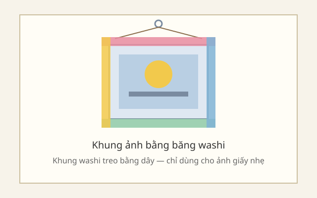

10 món đồ trang trí tự làm dưới 100 nghìn đồng
Tác giả: Ruler
Nhà nhỏ thường không thiếu đồ, mà thiếu chỗ để đồ có trật tự và thiếu một vài điểm nhấn để căn phòng trông có chủ ý. Nhiều người nghĩ muốn phòng đẹp phải mua thêm nhiều thứ, nhưng với nhà thuê và căn hộ nhỏ, mua thêm thường chỉ làm phòng chật hơn. Cách làm nhẹ nhàng hơn là chọn một góc đang trống, làm một món đồ vừa với góc đó, rồi mới quyết định có cần món tiếp theo hay không.
Bài viết này chọn 10 món theo cách đó. Mỗi món đều dùng vật liệu dễ tìm trong nhà hoặc ở hiệu văn phòng phẩm, chợ gần nhà. Con số 100 nghìn đồng ở tiêu đề là ngân sách mục tiêu cho phần vật liệu phải mua thêm của mỗi món, không phải giá bán cố định của món đồ. Giá thực tế thay đổi theo cửa hàng và thời điểm, vì vậy trước khi làm bạn nên kiểm tra giá ở nơi mình mua. Nếu một món cần mua thêm quá nhiều thứ, hãy bỏ qua món đó và chọn món tận dụng được nhiều đồ có sẵn hơn.
Chọn món trước khi mua vật liệu
Trước khi bắt tay vào món nào, hãy trả lời ba câu hỏi ngắn. Thứ nhất, món này sẽ để ở đâu, và chỗ đó còn trống bao nhiêu. Thứ hai, món này để ngắm hay để dùng hằng ngày. Thứ ba, khi chuyển nhà hoặc chán, món này có tháo ra và mang đi được không. Ba câu hỏi này giúp bạn tránh làm ra món đồ đẹp nhưng không có chỗ đặt, hoặc món đồ chỉ dùng được một lần.
Một cách sắp xếp đơn giản là bắt đầu từ một mảng tường trống hoặc một mặt bàn đang bừa bộn. Làm xong một món, đặt vào chỗ đó và sống cùng nó vài ngày. Nếu thấy phòng gọn hơn và bạn vẫn thích nhìn nó, hãy làm món tiếp theo. Nếu thấy vướng, hãy cất món đó đi và đổi sang món khác. Làm đồ trang trí cho nhà nhỏ nên đi từng món một, không nên làm cả chục món trong một buổi rồi mới tìm chỗ đặt.
Về màu sắc, bạn nên lấy màu từ một món đồ đã có sẵn trong phòng làm màu dẫn. Nhìn quanh phòng và chọn món đồ lớn nhất mà bạn thích nhìn nhất — có thể là chiếc rèm đang treo, tấm ga trải giường, hay chiếc ghế bạn ngồi nhiều nhất — rồi lấy màu của món đó làm màu dẫn cho các món mới. Khi món mới lặp lại màu của món đồ cũ, phòng sẽ trông liền mạch dù mỗi món làm từ vật liệu khác nhau. Cách chọn màu này cũng giúp bạn mua vật liệu đỡ lan man: chỉ mua giấy, vải và len gần với màu dẫn đã chọn, thay vì mua mỗi thứ một màu.
Nhóm treo tường: ba món làm cho mảng tường trống
Món đầu tiên là dây ảnh kẹp gỗ. Chuẩn bị một sợi dây thừng mảnh hoặc dây len, vài chiếc kẹp gỗ nhỏ và ảnh in khổ nhỏ. Căng dây giữa hai móc dán, rồi kẹp ảnh lên dây. Món này làm nhanh, thay ảnh cũng nhanh, và khi muốn đổi chỗ bạn chỉ cần tháo dây xuống. Lưu ý là dây chỉ hợp với ảnh nhẹ và thiệp nhẹ. Đừng treo khung nặng lên dây, và đừng treo dây ngay trên đầu giường.
Món thứ hai là khung ảnh bằng băng washi treo trên dây. Chuẩn bị ảnh in khổ nhỏ, một cuộn băng washi, dây len mảnh và một chiếc móc dán. Trước tiên, dán washi quanh bốn mép ảnh để tạo thành khung, chừa hai góc trên chưa dán kín. Sau đó, dùng đầu kéo bấm hai lỗ nhỏ ở hai góc trên của khung, luồn dây len qua hai lỗ và thắt nút ở mặt sau. Treo sợi dây lên móc dán, ảnh sẽ lơ lửng trước tường thay vì dán trực tiếp lên tường. Cách treo này hợp với người thuê nhà vì bạn chỉ cần tháo móc dán khi chuyển đi, và khung washi vẫn còn nguyên để treo lại ở phòng mới. Bạn nên thử washi ở một góc khuất trước, và hỏi chủ nhà trước khi dán bất cứ thứ gì lên tường.

Món thứ ba là mành treo len thắt nút trên que gỗ. Chuẩn bị len, một que gỗ thẳng hoặc cành cây khô đã làm sạch, kéo và dây treo. Cắt len thành nhiều sợi dài bằng nhau, buộc từng sợi lên que bằng một nút thắt đơn. Chia các sợi thành từng nhóm bốn sợi, thắt nút vuông ở mỗi nhóm, rồi thắt thêm một hàng nút vuông so le bên dưới để tạo thành tấm lưới. Cứ thắt như vậy cho tới khi tấm lưới dài vừa ý, rồi cắt đuôi các sợi cho bằng nhau. Treo que bằng một sợi dây lên móc dán. Món này hợp với tường trống phía trên ghế hoặc phía trên bàn, vì nó mềm và không chiếm diện tích mặt bàn.
Ba món trên đều là đồ treo tường, vì vậy bạn cần nhớ một nguyên tắc chung: chỉ treo đồ nhẹ bằng móc dán và băng dính. Đồ nặng, khung kính và gương lớn không thuộc nhóm này. Cách treo an toàn cho tường nhà thuê được viết trong bài “Trang trí tường nhà thuê không cần khoan” của website này, bạn nên xem cách treo an toàn ở bài “Trang trí tường nhà thuê không cần khoan” trước khi treo bất cứ món nào nặng hơn ảnh giấy.
Nhóm để bàn: ba món giúp mặt bàn gọn hơn
Món thứ tư là hộp bút từ lon và hộp giấy cũ. Chuẩn bị một lon sữa bột đã rửa sạch và phơi khô, hoặc một hộp giấy cứng, giấy màu hoặc vải vụn để bọc ngoài, keo và kéo. Bọc ngoài lon bằng giấy hoặc vải, dán mép cho phẳng, rồi đặt bút, thước và kéo vào trong. Món này có tác dụng hai mặt: vừa là đồ trang trí, vừa giúp mặt bàn bớt bừa bộn. Làm hai hộp, một hộp đựng bút hay dùng, một hộp đựng đồ ít dùng, thay vì làm một hộp rồi nhét tất cả vào đó.
Món thứ năm là khay để đồ từ bìa carton cứng. Bạn cần bìa carton từ thùng hàng cũ, thước, dao rọc giấy, keo và giấy màu để bọc ngoài. Cắt bìa thành đáy khay và bốn thành khay, dán các mép lại với nhau, bọc ngoài bằng giấy màu. Đặt khay ở lối vào để đựng chìa khóa và khẩu trang, hoặc đặt trên bàn làm việc để đựng sạc và tai nghe. Khay carton chỉ hợp với đồ khô và đồ nhẹ. Đừng đặt khay ở nơi dễ dính nước, và đừng đặt đồ quá nặng lên khay.
Món thứ sáu là lọ nến từ tách trà cũ hoặc lọ thủy tinh cũ. Bạn cần tách hoặc lọ đã rửa sạch, nến tealight nhỏ và một ít hạt trang trí nếu muốn. Đặt nến vào trong tách hoặc lọ, đặt tách lên một chiếc đĩa nhỏ để hứng sáp. Món này chỉ nên dùng khi bạn ở trong phòng và có thể trông chừng. Đừng đặt nến gần rèm, giấy và vải, đừng để nến cháy khi bạn ra khỏi nhà hoặc khi đi ngủ. Nếu nhà có trẻ nhỏ, bạn nên bỏ qua món này và chọn món không dùng lửa.
Nhóm vải và giấy: ba món làm phòng ấm hơn
Món thứ bảy là vỏ gối từ áo cũ. Bạn cần một chiếc áo thun cũ còn lành, kim chỉ hoặc keo dán vải, kéo và một chiếc gối ruột đã có sẵn. Cắt áo theo kích thước gối ruột, may hoặc dán mép lại, chừa một mép để lộn ra và cho gối ruột vào trong. Món này hợp với người thích thay đổi màu gối theo mùa mà không muốn mua vỏ gối mới. Chọn áo có màu gần với màu dẫn đã lấy từ đồ có sẵn trong phòng, và giặt áo trước khi cắt.
Món thứ tám là hoa giấy để bàn. Bạn cần giấy màu, kéo, keo và que gỗ nhỏ làm cành. Cắt giấy thành năm hoặc sáu cánh hình giọt nước, uốn cong nhẹ đầu mỗi cánh bằng sống kéo. Vo một viên giấy nhỏ làm nhụy, dán các cánh chồng lên nhau quanh viên nhụy, cánh sau chồng lên một phần cánh trước, cho tới khi bông hoa tròn đều. Gắn bông lên que gỗ, cắm vào một chiếc lọ nhỏ. Hoa giấy không cần chăm sóc, nhưng bạn nên đặt hoa ở nơi khô ráo và tránh nắng gắt trực tiếp để màu giấy đỡ phai. Đây là đồ trang trí bằng giấy, không phải hoa tươi.
Món thứ chín là tranh cắt giấy. Bạn cần giấy màu, khung tranh cũ hoặc bìa cứng làm nền, kéo và keo. Cắt giấy thành hình đơn giản như lá, hình tròn hoặc hình học, rồi dán lên nền theo bố cục đã phác trên giấy nháp. Món này hợp với người thích làm tranh theo ý mình nhưng không tự tin vẽ. Làm tranh khổ nhỏ trước, treo thử một bức rồi mới làm bức tiếp theo.
Nhóm ghi chú: một món giúp bạn nhớ việc
Món thứ mười là bảng ghim từ nút bần trên nền bìa cứng. Bạn cần một tấm bìa cứng, vài nút bần rượu đã dùng hoặc một tấm bần mỏng mua ở hiệu văn phòng phẩm, keo và vài chiếc ghim. Cắt nút bần làm đôi theo chiều dọc, dán mặt cắt xuống bìa cứng cho kín mặt bìa, rồi để keo khô hẳn. Ghim giấy nhắc việc, vé xem phim hoặc ảnh nhỏ lên các nút bần. Đặt bảng trên bàn làm việc hoặc treo lên tường bằng móc dán nếu bảng nhẹ. Bảng này giúp bạn gom giấy nhắc việc vào một chỗ, thay vì dán giấy khắp tường và khắp tủ lạnh. Khi bảng đã đầy, hãy gỡ những tờ đã xong việc xuống trước khi ghim tờ mới lên.
Bảng tổng hợp để bạn chọn món đầu tiên
Bảng dưới đây tự tổng hợp từ 10 món trên, để bạn chọn món đầu tiên theo thời gian và độ khó. Thời gian trong bảng chỉ là ước chừng cho người mới làm lần đầu, không phải thời gian cố định.
| Món | Vật liệu chính | Độ khó | Thời gian ước chừng |
|---|---|---|---|
| Dây ảnh kẹp gỗ | Dây, kẹp gỗ, ảnh in | Dễ | Dưới một giờ |
| Khung ảnh bằng băng washi | Ảnh in, băng washi, dây treo | Dễ | Dưới một giờ |
| Mành treo len | Len, que gỗ | Vừa | Một buổi chiều |
| Hộp bút từ lon cũ | Lon, giấy bọc | Dễ | Dưới một giờ |
| Khay để đồ từ bìa carton | Bìa carton, giấy màu | Vừa | Một buổi chiều |
| Lọ nến từ tách cũ | Tách hoặc lọ, nến nhỏ | Dễ | Dưới một giờ |
| Vỏ gối từ áo cũ | Áo cũ, gối ruột | Vừa | Một buổi chiều |
| Hoa giấy để bàn | Giấy màu, que gỗ | Vừa | Một buổi chiều |
| Tranh cắt giấy | Giấy màu, bìa nền | Dễ | Dưới một giờ |
| Bảng ghim từ nút bần | Bìa cứng, nút bần, ghim | Dễ | Dưới một giờ |
Nếu bạn chỉ có một buổi chiều cuối tuần, hãy chọn một món dễ và một món vừa, thay vì làm cả mười món. Làm xong, dọn sạch vụn giấy và keo thừa ngay, rồi mới đặt món đồ vào chỗ đã chọn. Thói quen dọn ngay sau khi làm cũng quan trọng như chính món đồ, vì nhà nhỏ rất nhanh bừa bộn nếu bạn để vật liệu làm dở khắp phòng.
Những lỗi hay gặp khi làm đồ trang trí giá rẻ
Lỗi đầu tiên là mua vật liệu trước khi chọn chỗ đặt. Bạn mua nhiều giấy màu và len vì thấy rẻ, nhưng về nhà không biết món nào để đâu. Cách tránh lỗi này là đo chỗ trống trước, viết ra món cần làm, rồi mới mua đúng vật liệu cho món đó.
Lỗi thứ hai là làm món quá to so với phòng. Một mành len dài, một bảng ghim lớn hoặc một khay quá rộng đều có thể làm phòng nhỏ trông chật hơn. Bạn nên làm món nhỏ trước, đặt thử rồi mới làm món lớn hơn nếu vẫn còn chỗ trống.
Lỗi thứ ba là dùng quá nhiều màu trong cùng một phòng. Mỗi món một màu khác nhau sẽ làm phòng trông lộn xộn, dù từng món riêng lẻ đều đẹp. Bạn nên giữ một màu dẫn cho cả phòng, và chỉ đổi màu dẫn khi bạn đã dọn bớt đồ cũ.
Lỗi thứ tư là bỏ qua an toàn vì món đồ nhỏ. Nến, keo nóng và dao rọc giấy đều có thể gây bỏng hoặc đứt tay nếu làm vội. Bạn nên làm ở nơi đủ sáng, để dao và keo nóng xa tầm tay trẻ nhỏ, và đọc hướng dẫn trên bao bì keo và nến trước khi dùng.
Kết luận
Mười món trên đều có chung một điểm: chúng không làm phòng rộng hơn, nhưng chúng giúp phòng có trật tự và có dấu ấn riêng. Bạn không cần làm hết mười món. Bạn chỉ cần chọn một món hợp với góc đang trống nhất trong nhà, làm xong và dùng thử vài ngày. Nếu món đó giúp bạn gọn gàng hơn hoặc vui hơn khi ở nhà, hãy làm món tiếp theo. Nếu không, hãy cất món đó đi và thử một món khác. Trang trí nhà nhỏ là việc làm từng món một, không phải việc mua nhiều đồ trong một lần.
Nguồn tham khảo
Bốn món khung ảnh bằng băng washi, mành treo len, hoa giấy và bảng ghim trong bài này được viết lại hoàn toàn bằng cách làm riêng; bài không dùng bài viết RDSIC làm nguồn.
- Mate.vn, "58 ý tưởng trang trí phòng tự làm để trang trí phòng cho vợ chồng trẻ" — danh sách ý tưởng trang trí phòng tự làm, trong đó có tường gallery, tường băng washi và các món treo tường (truy cập 23/11/2026): https://mate.vn/y-tuong-chung/58-y-tuong-trang-tri-phong-tu-lam/
- Acc Home, "Cách tự làm đồ trang trí phòng đơn giản" — các ý tưởng tự làm đồ trang trí phòng, trong đó có trang trí bằng gỗ tự chế, làm khung ảnh và làm gối nệm handmade (truy cập 23/11/2026): https://acchome.com.vn/cach-tu-lam-do-trang-tri-phong/amp/
- Giảm Rác Nhựa, "Sáng Tạo Không Giới Hạn: Khám Phá Những Vật Liệu Có Thể Tái Chế Để Trang Trí Ngôi Nhà Xanh" — các vật liệu tái chế thường dùng để trang trí, trong đó có chai lọ, giấy báo, bìa carton và vải vụn (truy cập 23/11/2026): https://giamracnhua.vn/tai-che/diy/nhung-vat-lieu-co-the-tai-che-de-trang-tri/